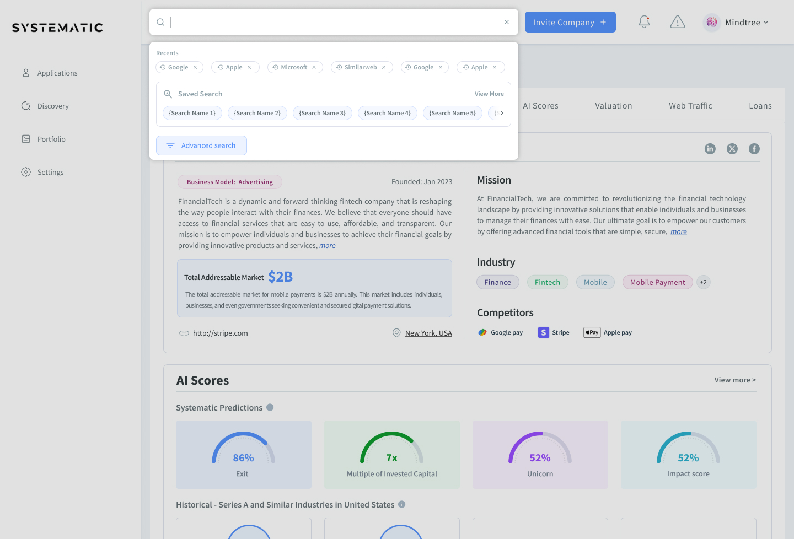
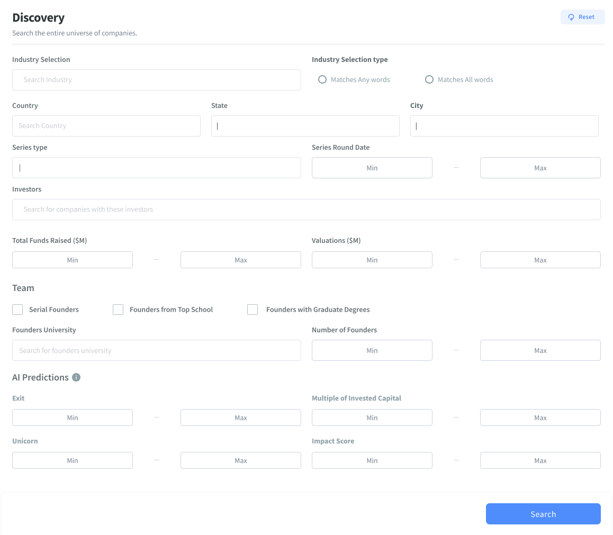
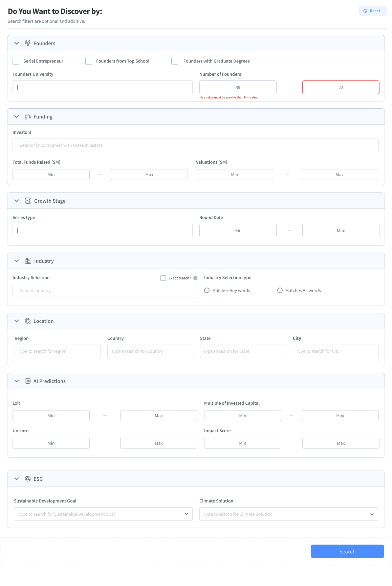
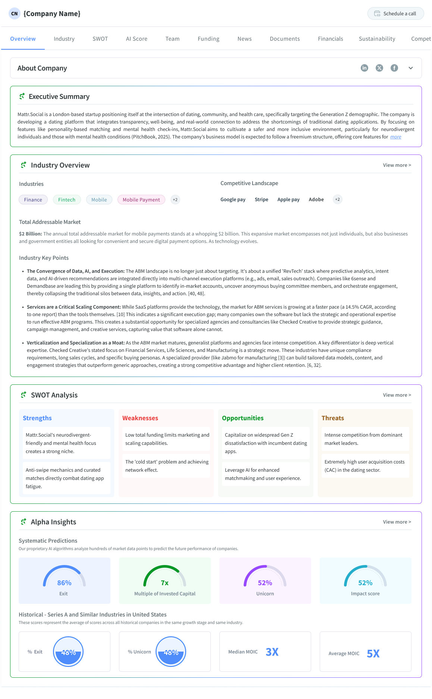

Systematic is a US-based fintech platform that helps institutional and angel investors discover, evaluate, and track companies — replacing fragmented Excel workflows with a unified data-driven system.
Designing a context-aware AI system that helps investors move from information overload to confident decisions.

A fintech platform where the data was never the problem but getting investors to trust it and act on it was.
Systematic is a US-based fintech platform that helps institutional and angel investors discover, evaluate, and track companies — replacing fragmented Excel workflows with a unified data-driven system.
Product Designer & UX Researcher. End-to-end ownership: user research, problem framing, concepting, high-fidelity UI, and engineering handoff. Managed stakeholder alignment across product, data, and ML teams.
Investors had access to data but couldn't act on it. Search was too rigid, filters required upfront expertise, and evaluation took hours of manual synthesis — causing analysis paralysis and session abandonment.
A two-part AI system: conversational discovery (chat-based search) and an AI insights engine (auto-generated company summaries). Reduced discovery time 3× and improved CSAT to 85%.
Investors weren't failing because of bad data. They were failing because the interface demanded precision they didn't yet have.
Fixing this wasn't just a UX problem it was a product moat. Platforms that reduce time-to-insight in investment research command significantly higher retention and willingness to pay.
The typical investor research journey
01
Confused↳ No results matched intent
Investors typed broad terms like "innovative fintech" — but the database only matched exact strings. Results were either too broad or empty.
02
Overwhelmed↳ 40+ parameters, no guidance
Filters existed for sector, revenue, geography, growth rate — but users didn't know which parameters mattered for their thesis.
03
Stuck↳ No way to evaluate quickly
Even after finding companies, there was no quick way to understand fit. Users manually read 10–15 profiles before shortlisting anyone.
Analysis Paralysis
Too many options. Not enough signal. No path forward.
12+
profiles opened
On average, investors browsed 12 or more company profiles before shortlisting even a single one.
73%
sessions ended without a decision
Nearly three in four research sessions ended with no shortlist, no action — just closed tabs.
"The problem wasn't that investors lacked data, it's that they couldn't translate their instincts into a structured query. The interface forced precision before they had it."
45–90 min
avg. time to evaluate one company
5–7 tabs
opened per research session
73%
sessions ended without a shortlist
0
tools that understood investment language
Users reported that traditional keyword search felt like "looking for a needle in a haystack where the needle is invisible."
"I don't know what I'm looking for until I see a pattern, but I can't see the pattern because I don't know what to search for."
Institutional Investor, Series B
"Filtering is too rigid. If my criteria is 'innovative' but the database only has 'R&D spend', I miss the nuance entirely."
Angel Investor, Tech Focus
"I spend more time configuring filters than actually evaluating companies. The tool is supposed to help me move faster — it does the opposite."
VC Partner, Growth Stage
"The search returns names. What I need is context — stage, traction, why it's even relevant to my current thesis. None of that comes through."
Investment Associate, Early-stage VC
"By the time I've gathered enough signal to feel confident making an intro, someone else already closed the round."
Managing Director, PE Fund
18
User Interviews
6
Stakeholder Sessions
3
Usability Tests
No guidance, no intent recognition — users started from zero every session.
40+ undifferentiated parameters with no hierarchy or investment-aware grouping.
Flat, cluttered rows with no signal-to-noise differentiation or AI synthesis.
"The average session involved 3 separate screens, 20+ minutes, and still ended without a shortlist."
— Synthesised from 18 user interviews



Understanding what exists and where the gap lives.
Approach: Keyword search + rigid filters
Failure Point: Users don't know what to filter for
Systematic Edge: AI-driven discovery
Approach: Conversational, open-ended
Failure Point: Hard to compare or structure
Systematic Edge: Structured AI insights
Approach: Parameter-first filtering
Failure Point: Requires upfront knowledge
Systematic Edge: Context-aware suggestions
Mapping the investment funnel revealed something critical: the problem wasn't at the top it was in the middle.
Investor articulates initial intent via keyword or natural language
Users refine scope through filters — sector, growth, geography
The critical moment where AI-generated insights reduce manual effort
Promising companies are saved and organized for comparison
Final validation with structured data before investment decisions
Friction Peak: Stage 3 — Insight Evaluation.
This is where investors stall. They have a shortlist but no fast way to assess fit. They read entire profiles, cross-reference tabs, and still feel unsure. It's not a data problem, it's a synthesis problem.
We didn't land on chat immediately. Three directions were fully explored before committing.
Rebuild filters with smarter groupings, saved templates, and contextual tooltips.
For
Against
Decision: Filters demand precision. Our users didn't have it yet.
Surface pre-computed recommendations on a personalized home screen based on portfolio + behaviour signals.
For
Against
Decision: Good for retention loop, not for initial discovery. Parked for Phase 2.
Natural language input that interprets investor intent and maps to structured company data in real time.
For
Against
Decision: Best fit. Investors explore before they can specify. Chat mirrors that naturally.
We prioritized exploration — accepting that results would be less precise than filter-based search in exchange for reducing the barrier to start.
Trade-off: full autonomy vs explainability. We chose to surface reasoning ("Here's why I surfaced these companies") to build trust with skeptical institutional investors.
We prioritized a chat overlay pattern — preserving the existing search as fallback. This reduced adoption risk while allowing the new system to prove itself.
Good design isn't just what you ship — it's what you decide not to ship, and why.
Only 8 weeks to ship
We had a hard deadline tied to a board review. There was no time to do things one step at a time — design, research, and building all had to happen at once.
High Impact
We tested with real users in Week 3 instead of waiting. It wasn't perfect, but it gave us feedback fast enough to act on.
The AI wasn't fully ready yet
The AI could understand most questions, but not all. It got things right about 74% of the time at the start — which meant it would sometimes miss the mark.
Design Workaround
We designed the product to handle AI mistakes gracefully. Every response showed how confident the AI was, and users could easily rephrase if something didn't look right.
Engineering had limited capacity
The AI chat and the existing search ran on the same backend. Adding new features required the ML team — and they were already stretched thin.
MVP Scope Cut
We kept the first version simple and used what already existed. Features like memory across conversations were saved for a later release.
Each part of the solution directly targets a specific friction point revealed in the funnel analysis.
The funnel showed discovery friction at Stage 1–2 and at Stage 3. Rather than one universal solution, we built two complementary systems each tackling a distinct failure mode.evaluation friction
Key Features
Expected Impact: Moves users from blank-slate anxiety to confident exploration in under 60 seconds.
Key Features
Expected Impact: Converts a 2-hour profile analysis into a 10-minute structured evaluation.
Key moments where users begin interactions and access information.


Land on a search results page, OR Initiate an AI-driven chat by clicking “Ask Systematic Answers.”

Launches the search interface.


Opens the recent searches (if available), or allows the user to begin typing a query. This action also enables direct access to the AI chat mode.
A bell icon with a highlighted border and sound alert, notifying users of updates without interrupting their flow.


Collapse · History · New Chat
Hover states exist for all icons.
Supports: Text, Tables, and Links.
Add “View All” → redirects to specific tab (Investor, Competitor, etc.)
Resets conversation state
Retains ability to access previous history
Opens last message, allows scroll to older ones
Clicking History icon expands sidebar
Rename · Delete


Access Rules:
Total Free Messages: 7 across all time
Weekly Limit: 3 (resets every Monday)
Subscribed Users / Trial Users: Unlimited access
Hover states exist for all icons.
UX Behavior:
Show banner before chat and after each chat
Show limit messages:
3/week: “You’ve used 3 chats this week. Come back next week or subscribe.”
7/total: “Free chats used up. Subscribe for unlimited access.”
We didn’t want a boring chat box. We designed:


Each version taught us something. We cut the ones that stalled discovery — and shipped the one that matched how investors actually work.
Empty “Systematic Answers” panel with only a Let’s Chat CTA and no prompts or history.
We removed it — the blank slate left investors unsure how to start a useful query.

Added prompt chips and an ask field, but the body stayed empty and floated without session structure.
We removed it — better entry, still no support for ongoing research.

Added a history sidebar and table-style answers, but topics were placeholders and the agent stayed a heavy overlay.
We removed it — closer on structure, not yet scannable or trusted enough for diligence.

Real session history, sourced insight cards, loading states, and search/agent entry in the top nav.
We selected it — it matched how investors explore companies and build conviction in-flow.

We introduced AI Insights directly on company profiles to support fast, confident evaluation.
Users can quickly skim before diving deep.
Organized panels, not open-ended chat.
Progressive disclosure reduces overwhelm.
This reduced the need for manual synthesis while preserving access to deeper data.
Better context → better insights → higher trust → better decisions

Five key design improvements: visual hierarchy, readability, AI explainability, trust signals, and decision support — all addressed in a single redesigned profile view.
NeuralFlow Inc.
Artificial Intelligence · San Francisco · Founded 2019
Unstructured wall of profile text with no scannable hierarchy across overview content.
Investment Potential — see Financials tab for more
NeuralFlow builds real-time ML inference infrastructure. Strong NRR (142%), expanding enterprise contracts, and capital-efficient growth signal clear product-market fit in a high-demand category.
AI confidence: High · Based on verified data · View sources
Investors can select companies from their results and compare them across standardised dimensions — including an AI-generated fit score tied to their original thesis query.
| Metric | NeuralFlow Top Pick | DataSphere | LogixAI |
|---|---|---|---|
| Stage | Series B | Series A | Seed |
| ARR | $12M | $4.2M | $820K |
| NRR | 142% | 118% | 95% |
| Risk | Low | Medium | High |
| AI Fit | 92% | 74% | 48% |
Two rounds of testing with investors surfaced critical issues — and drove the most impactful design iterations.
Unmoderated prototype test with 6 internal users (analysts + ops). Figma prototype, 3 tasks.
45-min moderated sessions with 8 external investors. Think-aloud protocol. Live staging environment.
Blank chat input caused paralysis
4 of 6 users in Round 1 stalled at the empty chat input for 15+ seconds. The open-ended "Ask anything" prompt was too vague for professional users with a specific research context.
We assumed investors would know how to start. They didn't.
Added contextual prompt suggestions (3 pre-filled query starters based on user role). Redesigned empty state to feel like an invitation, not a blank form.
Validated in next round
AI response format was unreadable at speed
In Round 2, investors wanted to scan results in under 10 seconds. Prose-style AI responses required reading, not scanning — users skipped them entirely and went straight to the company list.
We over-indexed on narrative response quality and under-indexed on scan-ability.
Restructured all AI responses to lead with a bolded summary line followed by scannable bullets. Tables replaced prose for comparative data.
Validated in next round
"New Chat" created unexpected anxiety
3 users hesitated before clicking "New Chat" — they feared losing the current context or search history. One user said: "If I start over, I lose everything I've done."
The "New Chat" interaction was treated as a reset, not as a fork.
Added a confirmation tooltip ("Your history is saved — this just starts a fresh thread") and ensured history sidebar was always visible before the action. Renamed to "Start new thread."
Validated in next round
AI Insights panel felt disconnected from company data
Users praised the AI insight summary but then struggled to reconcile it with raw data in other tabs. They wanted to fact-check — but the path back was unclear.
We didn't bridge the gap between AI synthesis and raw data trust.
Added inline "See source data" links within the insight panel. Each AI claim now links to the specific tab and section where the underlying data lives.
Validated in next round
"We didn't test to validate our assumptions — we tested to break them. The most valuable findings came when investors did something we didn't expect."
54 → 72 +18pt
61% → 89% +28%
4m 20s → 1m 55s −55%
Transforming the user experience from friction to flow
Existing experience
High Friction→ High cognitive load, slow decision-making, low confidence
Systematic Agent
Confident Flow✨ Reduced cognitive load, confident decisions at speed
High Friction → Design Transformation → Confident Flow
Design doesn't happen in isolation. Here's how I drove alignment and navigated ambiguity.
Weekly alignment on scope + priority. I drove design strategy; PM owned business framing and stakeholder narrative.
Embedded in bi-weekly ML reviews. I translated user needs into API constraints early — avoiding rework in build phase.
Worked with data team to define which signals to surface in AI insights. Avoided vanity metrics; prioritised investor-relevant signals.
Numbers alone don't tell the story. Here's what the metrics meant for users and the business.
40%
Reduction in cognitive loadMeasured via task completion & SUS scores
Users moved from information overload to confident shortlisting in under 3 minutes — down from an average of 8.
+12%
User retentionMonth-over-month active users
Feature adoption drove weekly active usage among investors who previously churned after 2 sessions.
3x
Faster discoveryFrom query to shortlist
The query-to-insight pipeline compressed a 2-hour research workflow into approximately 35 minutes.
85%
User satisfaction (CSAT)Post-launch survey, n=120
Satisfaction driven primarily by AI transparency and structured summaries — users trusted the output because they could see the reasoning.
What worked, what I'd change, and where I'd take this next with the benefit of hindsight.
Mapping the full investor research journey before touching UI revealed that evaluation was the real bottleneck — not discovery. This reframe shaped every design decision downstream.
AI chat was the headline feature, but retaining keyword search as a parallel path reduced adoption risk. Users who trusted the existing flow weren't forced into a new paradigm on day one.
Linking every AI claim to a source data tab wasn't a nice-to-have — it was a prerequisite for professional trust. Investors needed to see the reasoning, not just the conclusion.
We underestimated how cognitively demanding the first chat interaction would be for expert users. Earlier testing on the empty-state experience would have saved an entire design iteration.
We ran research sessions but ideated internally. Co-design workshops with 2–3 investors during the concept phase would have surfaced the "natural language thesis" insight earlier.
We measured CSAT and retention, but "confidence in AI outputs" wasn't formalized as a KPI until midway through. Defining that metric upfront would have focused the trust design work.
Move from reactive chat to proactive signals — e.g. "3 companies matching your last query have new funding rounds." This shifts the product from search to intelligence.
Expand insights from individual companies to the investor's existing portfolio — surfacing overlaps, risks, and diversification opportunities across their holdings.
Enable team-based research — shared chat sessions, comment threads on AI insights, and co-shortlisting. Investment decisions are rarely made alone.
"The most important design decision wasn't the chat interface — it was choosing to reframe the problem from 'how do we improve search' to 'how do we reduce the cost of forming a view.' That shift changed everything."